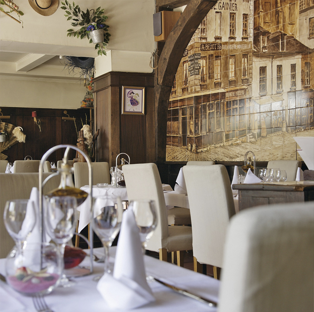
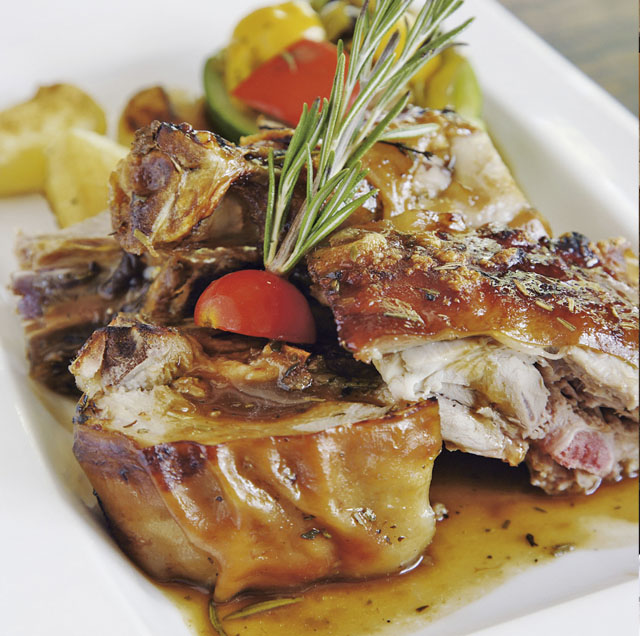

Всего в нескольких шагах от Елисейских полей, в ресторане „Al-Ajami“ посетители могут погрузиться в кулинарное волшебство Востока. Оформление, напоминающее сцены из сказок «Тысячи и одной ночи», уже визуально настраивает на невероятно вкусные и изысканные блюда, характерные для ливанской кухни. Семья Абу Шалбак, владеющая кроме „Al-Ajami“ рестораном с таким же названием в Бейруте, гордится своей историей в мире гастрономии, насчитывающей 88 лет. Парижский „Al-Ajami“ давно стал заведением, где можно отведать настоящие ливанские блюда отменного качества, приготовленные по традиционным семейным рецептам. Сюда приходят не только французы с арабскими корнями, но и известные люди из мира искусства, актеры и политики. Чтобы познакомиться с ливанским кулинарным мастерством во всем его многообразии, стоит заказать дегустационное меню или „Mezze-Discoveries“ – набор теплых и холодных закусок, – состоящий из 9 или 12 различных блюд. Возьмете ли Вы хумус – знакомое многим пюре из нута, табуле – салат из булгура, петрушки, лимона и оливкового масла, халуми – овечий сыр с анисом или мжаддару – суп-пюре из чечевицы с оливковым маслом – любое блюдо, которое рождается на кухне „Al-Ajami“ сродни поэтическому творению. К таким экзотическим кушаньям – бутылка красного вина из Ливана, и вечер будет незабываемым. Гостей порадует также разумное соотношение цены и качества.


{kind=link}
{kind=link}